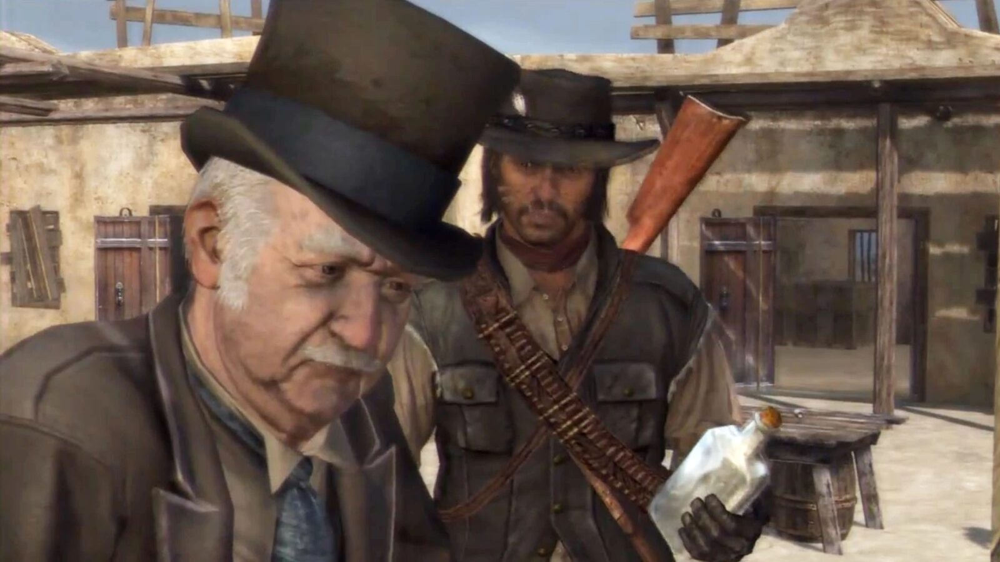
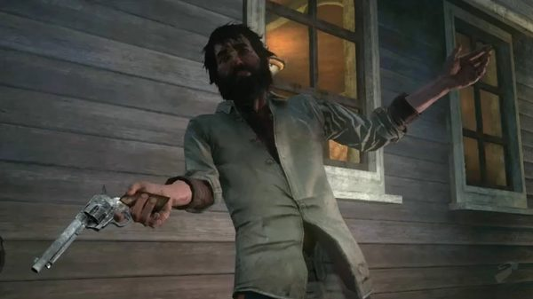
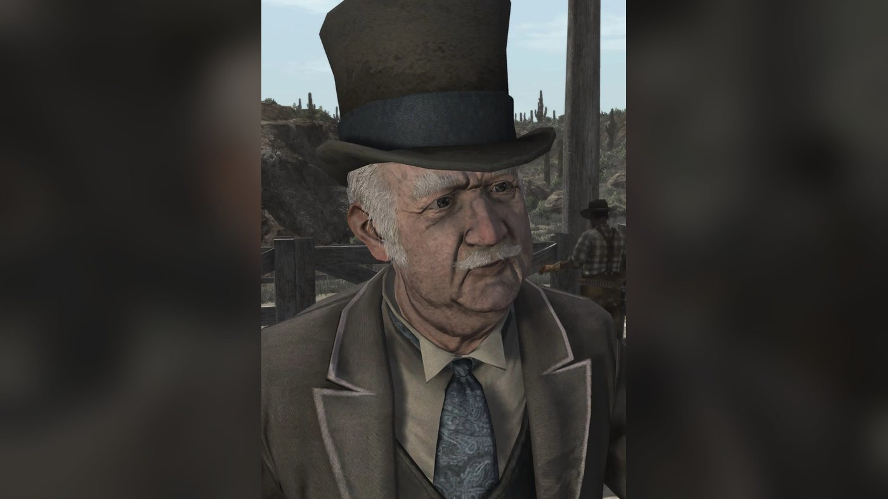
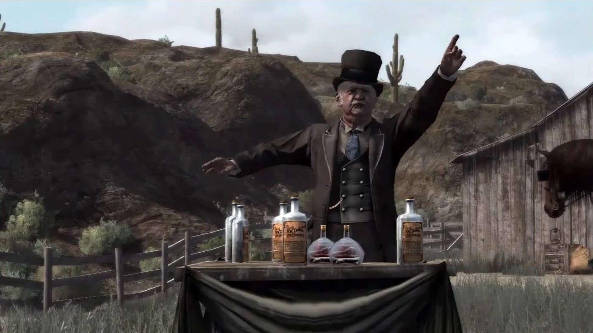
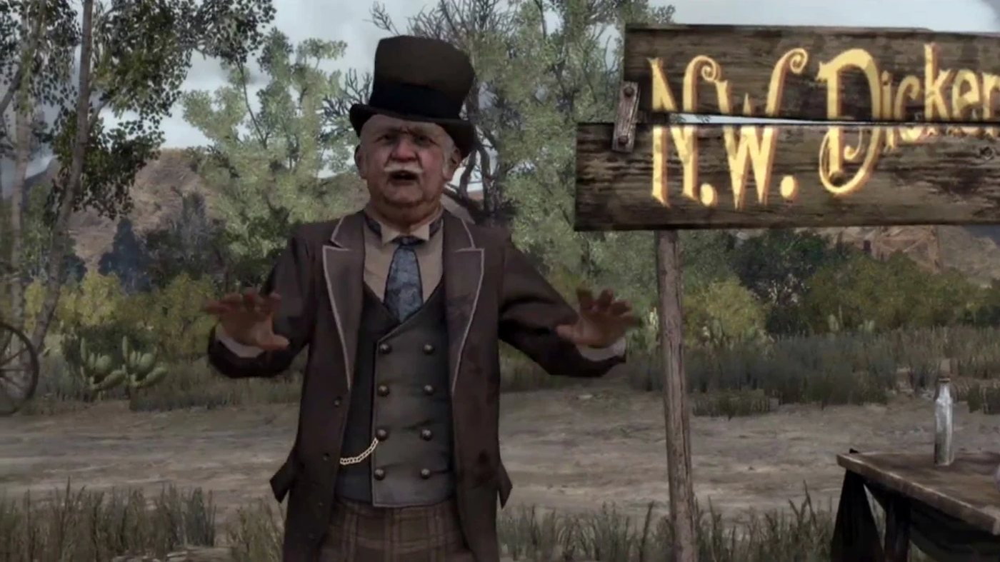
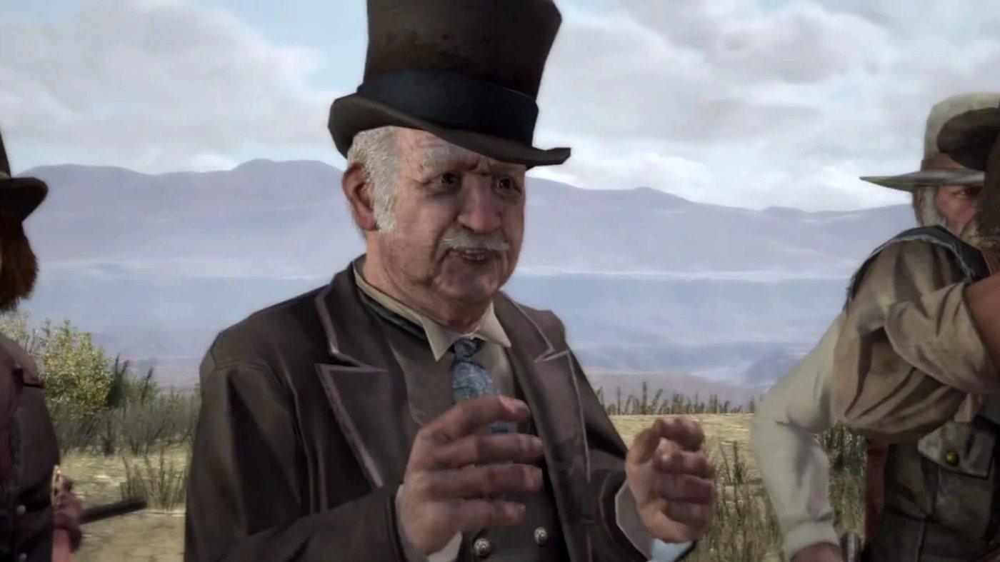
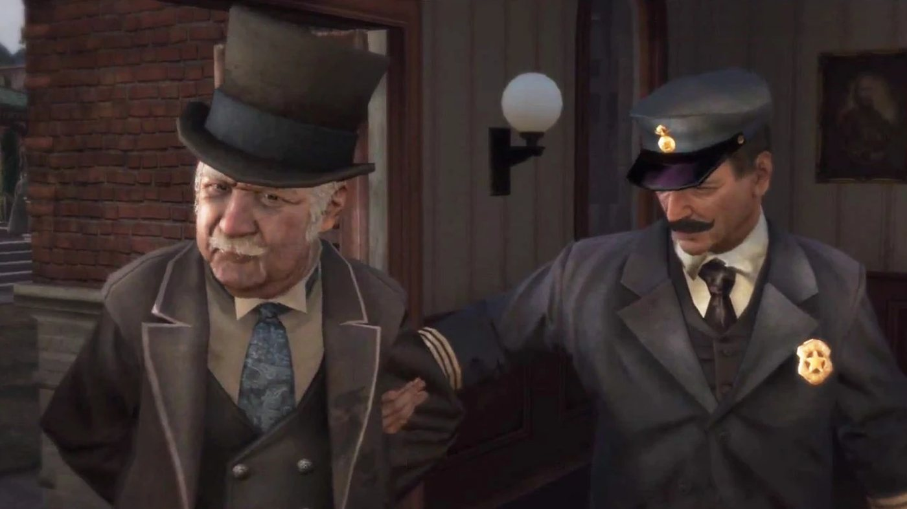

Character · New Austin
Nigel West Dickens
Nigel West Dickens is a traveling seller of miracle tonics in Red Dead Redemption (2010), set in 1911. John Marston finds him wounded beside his wagon and drives him to the doctor in Armadillo. Dickens then offers to help John against Fort Mercer, the hideout of Bill Williamson's gang. In return John poses as a volunteer at one of his elixir shows and wins two races for him. Dickens introduces John to Seth Briars and Irish, has his wagon armored, and drives it into Fort Mercer with John and a machine gun hidden inside. He is last seen in Blackwater, where John has him released after a narcotics arrest.
He is voiced by Don Creech. He also appears in Undead Nightmare, and Red Dead Redemption 2 mentions him in a gunsmith's catalogue and in a 1907 newspaper article.
- Name
- Nigel West Dickens
- Born
- Not given in the game; 65 years old in 1911 according to the Game of the Year Edition guide, quoted by the Red Dead Wiki (about 1846)
- Grew up
- Mostly in Fort Wayne, Indiana, by his own account (conversation quoted by the Red Dead Wiki)
- Status
- Alive at his last appearance (1911)
- Nationality
- American according to the Red Dead Wiki; speaks with an English accent (Game of the Year Edition guide)
- Residence
- Itinerant; a cave at Cueva Seca, New Austin (1911)
- Occupation
- Traveling seller of tonics and elixirs
- Allies
- John Marston, Seth Briars, Irish
- Weapon
- Cattleman Revolver (Red Dead Wiki)
- Games
- Red Dead Redemption, Undead Nightmare; mentioned in Red Dead Redemption 2
- Voiced by
- Don Creech
Biography
Origins
Nigel West Dickens is a traveling seller of patent tonics. According to the Red Dead Wiki, which cites the Red Dead Redemption Game of the Year guide, he was born around 1846. The addresses he gives John Marston in 1911 are listed under Names. The Red Dead Wiki reports an account of his youth, from a conversation it places during "Liars, Cheats and Other Proud Americans" that does not appear in the transcript of that mission. In it, Dickens says he grew up mostly in Fort Wayne, Indiana, and that his mother worked in a theater, on the building maintenance side rather than on stage. He calls himself a citizen of the world and names Paris and London as his spiritual homes, while admitting he has never been to either city.
The same source has him quote Voltaire, answer John in French and say that the writings of Ralph Waldo Emerson have shaped him. According to the Red Dead Wiki, which quotes a conversation it places in "The Sport of Kings, and Liars" and that the transcript of that mission does not contain, he says of his children: "I'm sure I have many". He credits this to the effect of his elixir on virility. He also says he leaves every woman at dawn, so as not to be tied down. He knows of one son, who died shortly after birth, and says the boy's mother was "making all sorts of unreasonable demands". The transcripts give no detail on his early career, apart from his own claim of thousands of satisfied customers.
Red Dead Redemption 2 (2018) never shows him, but two in-game documents mention him. The first is in the Wheeler, Rawson and Co. catalogue, the entry for the Sawed-Off Shotgun includes a customer's letter signed by T. Bernadette Moncrief of Annesburg. She writes that, while she spent a year away at school, her parents, both suffering from rheumatism, met a medicine man named Nigel Dickens and spent every penny they had on his bottles. She suspects that laudanum or opium was the base of the tincture, because they suddenly could not get enough of it. Back home in the autumn, she found them taking larger and larger doses. When Dickens returned the following week with crates of his product, she pulled the shotgun out from under her knitting, and she writes that he hollered like a chicken. The letter gives no year; the Red Dead Wiki dates the episode to around 1898.
The 1907 newspaper article
Epilogue part 2: Beecher's Hope
In 1907, the last newspaper issue of Red Dead Redemption 2, available after "American Venom", carries the article "Man Exposes Medical Frauds". It appears in the Blackwater Ledger, the New Hanover Gazette and the Saint Denis Times, and the player can buy only one of the three. This is the second document. The article deplores the spread of quack doctors in small towns. It describes Nigel West Dickens as "a studied man of letters, botany, ornithology and the history of home medicine" who "has vowed to uncover the Hippocratic frauds". According to the paper, he gives public demonstrations in which a plain tonic is said to cure five illnesses, among them rheumatism, rickets and scarlet fever. It says audiences have welcomed them and that, in several towns, the local doctor has been accused of selling fake cures. The article ends with his plan to tour the country in the coming years and hunt down other charlatans.
Red Dead Redemption (1911)
In 1911, agents of the Bureau of Investigation hold John Marston's wife and son to force him to hunt down Bill Williamson, who holds Fort Mercer in New Austin. Dickens appears in eight missions of Red Dead Redemption: seven in the first act, from "Old Swindler Blues" to "We Shall Be Together in Paradise", and one in the third act, "Bear One Another's Burdens". He has no mission in Mexico.
Act I: New Austin
His tonic is already known in the region. Issue No. 53 of the Blackwater Ledger, the first issue John can buy, runs the article "Wonder Tonic From The East, Doctors Worried About Future". It reports that a one-legged woman in Plainview grew her limb back and that a dying old man ran to the nearest brothel with the vigor of a 14-year-old. The paper lists the ailments the West Dickens Patented Elixir claims to cure, from lumbago to malaria, and says its distributor calls it the greatest medical discovery of the age. At the end of "Justice in Pike's Basin", the deputy Eli tells Marshal Leigh Johnson that Dickens, the tonics merchant, was due in Armadillo the week before and has gone missing. Eli adds that many townspeople miss him. Johnson treats him as a narcotics seller who swindles housewives.
In "Old Swindler Blues", John finds Dickens wounded and lying beside his wagon in Cholla Springs, on the outskirts of Armadillo. Dickens greets him with a string of curses, then declares himself finished and asks John to take the reins. When John gives his name, Dickens recognizes him as an outlaw and says he has gone from one danger to another in the same day. On the road, riders attack the wagon; Dickens calls them the same scoundrels as before, and the mission page describes them as unhappy customers. John shoots them and drives on to Armadillo while Dickens moans at every bump and calls on death. Outside the doctor's office, Dickens calls John a gentleman and a man of honor, says he always pays his debts and promises to be his man if he survives.
At the start of "Spare the Rod, Spoil the Bandit", Eli drinks a bottle of the elixir and defends it as a medical breakthrough from the East, while John says the seller is no more a scientist than he is a priest. In "You Shall Not Give False Testimony, Except for Profit", John finds Dickens leaving the office of the doctor, Nathanial Johnston, after telling him that miracle cures are no laughing matter. Dickens says his wounds are much better, credits his own tonic, and admits he is broke. He asks John to drive him to Ridgewood Farm and explains the plan on the way: John will get off before the farm, mingle with the crowd and come forward as a volunteer chosen at random. When John asks whether the whole thing is a sham, Dickens speaks of a little innocent ballyhoo.
At the farm, Dickens addresses the hard-working souls of Cholla Springs and lists the ailments his tonic cures, from rheumatism to ravaged nerves. He calls John out of the crowd and has him drink a dose of Dr. West Dickens' Own Patent Tonic. John shoots a skull hanging on a porch, then the hat of a spectator, Aquila, who calls John a fraud and throws his hat in the air. If John misses, Dickens tells the crowd that he is still getting used to his new eyes. Aquila then picks a fistfight, which John wins, and draws a revolver, which John shoots out of his hand. Dickens presents each feat as proof of the elixir's effects, and Aquila himself decides to try a bottle. After the show, Dickens offers to help John with Williamson and proposes a Trojan horse to get inside the fort. He sends John to an old friend, Seth Briars, who can usually be found at Coot's Chapel.
John introduces himself to Seth as a friend of Dickens in "Exhuming and Other Fine Hobbies". In "Liars, Cheats and Other Proud Americans", John finds Dickens at Ridgewood and tells him he has met Seth. Dickens says the plan needs money for weapons, armor plate for the wagon, extra hands and danger money for himself. He rules out selling more tonic in the area for fear of being lynched, and proposes a cart race at Gaptooth Breach, where he has John race as his ringer; the same issue No. 53 of the Ledger announced a cart race there with a large cash prize. On the way, the two men argue about John's past, and Dickens tells him that people in the region see no difference between him and Williamson. John wins the race, and the two leave quickly before the losers want their money back. Near Benedict Point, Dickens sends John to an old friend of his, Irish, to obtain heavy firepower.
In "A Frenchman, a Welshman and an Irishman", John tells Irish that Dickens said he could help him find a machine gun. In "Can a Swindler Change His Spots?", Dickens calls after John, admits a few innocent mistakes and asks him to help sell more tonic before acting selflessly for him. In Plainview, his pitch to the oil workers is cut short by men who denounce him as the fraud who has just swindled them in Cholla Springs; one proposes to tar and feather him, another to shoot him. Dickens drives the wagon while John rides shotgun and fights off the pursuers. At Dickens's urging, John then shoots a roadblock loaded with dynamite. At Cueva Seca, Dickens suggests shelving the tonic business for a while and proposes another race, at Rathskeller Fork.
In "The Sport of Kings, and Liars", John finds Dickens living in a cave at Cueva Seca, which Dickens calls delightfully Dickensian. Dickens says he still needs cash to fit extra hardware to his wagon, his Trojan horse, and leads John to Rathskeller Fork. On the way he proposes a permanent partnership, which John refuses: their arrangement will end with Williamson's capture. John wins the horse race. Dickens says the team will be ready once Seth and Irish have delivered their part. At the end of "On Shaky's Ground", Irish tells John that Dickens's wagon will soon be rigged, and at the end of "Let the Dead Bury Their Dead", Seth says he will meet John and Dickens at Fort Mercer.
"The Assault on Fort Mercer" brings together Dickens, John, Leigh Johnson, his deputies Eli and Jonah, and Seth; Irish only turns up once the fighting is over. From a hilltop, Dickens points out Seth, who has got inside the fort and is dancing on the wall to distract the gang. Dickens tells John to hide in the back of the wagon, where the Gatling gun is mounted. Seth welcomes the wagon through the gate, and Dickens launches into a sales pitch for the outlaws. He then raps on the side of the wagon, the signal agreed with John, who opens fire. Dickens bids the posse farewell and leaves, but returns to the gate soon after, asks to be let in and warns that reinforcements are coming. Bill is not in the fort: Jonah reports that a captured gang member says Bill left for Mexico the morning before. Dickens wishes John well before he heads south.
In "We Shall Be Together in Paradise", Dickens is with Irish at Brittlebrush Trawl when John arrives for the crossing into Mexico. He has come to wish John well and says he will miss him. When John asks where he is going, he names London, Paris or perhaps Peking, and says this land is too small for him. He adds that men of science are not loved in America and that he is leaving for the civilized world, where they are given medals. The raft then leaves without him.
Act III: West Elizabeth
Dickens reappears once, in "Bear One Another's Burdens". After his meeting upstairs with Edgar Ross and Archer Fordham at the Blackwater police station, John sees Dickens brought in under arrest by a police officer. Dickens protests that he has a patent for it. John reminds him he was supposed to be going to Peking; Dickens answers that he thought so too, that it is a long story, and that he is now charged with narcotics possession. John asks Ross to have him released, vouching for him as a harmless swindler who helped him get Williamson. Ross tells the officer to let him go. Dickens walks out of the station, and Ross leaves with John for the wreck of the Serendipity. It is his last appearance in Red Dead Redemption; the 1914 issue of the Blackwater Ledger does not mention him.
Undead Nightmare (non-canon)
Undead Nightmare, an expansion released in 2010, is not part of the series' canon. According to the Red Dead Wiki's page on the expansion, survivors in Blackwater count a snake oil merchant among the possible causes of the plague, and John follows that lead to New Austin. In "A Cure for Most of What Ails You", he finds Dickens at Fort Mercer, now a refuge, selling his tonic to the survivors for 100 gold coins as a cure that keeps the undead away. John finds the price outrageous and, at gunpoint, makes him hand it out for free. A man who drinks it walks out of the fort and is torn apart by the undead at once. Dickens gives John a bottle to use as bait, then sends him to gather five Desert Sage and five Violet Snowdrop so that he can try to make a real cure.
With the plants, Dickens makes a phosphorus coating for John's ammunition. He then sends John to collect old metal parts at Riley's Charge, and at Benedict Point turns them into a Blunderbuss, which he presents as the right weapon against the undead. According to the Red Dead Wiki's page on the weapon, John asks whether they are back in 1850. Dickens says he means to get to Mexico and that John can find him at Solomon's Folly a few days later. In "American Imperialism", he meets John there and explains that the border is closed, but that the U.S. Army is sending a train south from Benedict Point. Disguised as a soldier, John could board it, and Dickens points him to a group of army deserters camped at The Scratching Post who might give him a uniform. According to the Red Dead Wiki, when John asks where he will go, Dickens answers Baghdad, or his maker by way of the undead. He leaves on foot, and John does not see him again.
Personality
Rockstar's character descriptions of September 2018 concern the gang of Red Dead Redemption 2 and do not include Dickens. The Red Dead Wiki quotes the Game of the Year Edition guide of Red Dead Redemption: "Nigel is a 65-year-old traveling salesman. Some may consider him to be a would-be Victorian gentleman, but the truth is that he is really just a conniving huckster. He speaks with an English accent, but it is quite possible that he is not even English. Although he may not be wholly evil, he is extremely verbose and quite deceitful."
In the game he speaks in long, ornate sentences full of references to Shakespeare (Othello, Iago, Cassio), Homer, Odysseus and the Trojan horse. He calls himself a man of science and a pioneer of commerce and medical research.
In his own words
On the road to Ridgewood Farm, in "You Shall Not Give False Testimony, Except for Profit", he tells John: "I have been blessed with the gift of language", and that he will not apologize for it. When John says he was overplaying his wounds, he answers: "Act I can, John. A more convincing Othello there has never been." Of the company he keeps, in "Liars, Cheats and Other Proud Americans": "I see the good in everybody, John. It's a flaw of mine. I have a soft spot for life's flotsam and jetsam." Fleeing Plainview, when John suggests a change of career: "I will never give up on science, John!"
On the way to Fort Mercer, with John hidden in the back of his wagon, he admits: "This is going to have to be the performance of my life. I hope my nerves don't get the better of me. I'll be honest with you, John, I'm a little jittery." When John loses patience with the delays at Cueva Seca, in "Can a Swindler Change His Spots?", he replies: "I'm only an ageing vendor of exotic elixirs, not the bloody U.S. cavalry!"
Names
He introduces himself to John in Armadillo as "Nigel West Dickens of East Cheap, London, New Waverly, New York, and Armadillo, New Austin". When John calls him old man, he corrects him: "That's Mr. West Dickens to you, boy." John repeats: "Give it up, old man." John goes on to call him Mr. West Dickens, West Dickens or old man. Deputy Eli calls him Mr. West Dickens, the tonics merchant, and greets him at Fort Mercer with "it's the snake oil guy!" In his shows he sells "Dr. West Dickens' Own Patent Tonic", giving himself the title of doctor. In Red Dead Redemption 2, the letter of an Annesburg customer calls him Nigel Dickens, and a 1907 newspaper article calls him Mr. Dickens.
Appearance
He is a heavy-set old man with a jowly face, white hair at the temples and a thick white mustache. He wears a dark top hat, a suit with a waistcoat and a tie. According to the Red Dead Wiki, a scar runs across his neck; the game does not explain it.
Relationships

John Marston
John saves Dickens's life in "Old Swindler Blues", then works for him in exchange for his help against Fort Mercer (see Biography). John makes no secret of his contempt: in "Liars, Cheats and Other Proud Americans" he reminds him, "What you are, dear boy, is a man whose life I've saved twice now", and threatens to shoot him if he does not help. Dickens answers that John has "the exterior of a violent man, but the soul of an angel". When John says the gang stole from the rich to give to the poor, Dickens makes fun of the idea (see Quotes).
On the way to Rathskeller Fork, Dickens proposes: "We should consider a more permanent partnership." John answers: "This partnership ends as soon as I have Bill Williamson." They part on good terms at Fort Mercer and again at Brittlebrush Trawl. In Blackwater, John vouches for him and gets him released (see Biography; John's words are under Quotes). In Undead Nightmare, which is not canon, they meet again at Fort Mercer (see Biography).

Seth Briars
Dickens sends John to "my old friend, Seth" (see Biography). In "Liars, Cheats and Other Proud Americans" he calls him "Seth of the dead" and defends grave robbing, which he says was valued as an art in ancient Egypt. Later on the road, when Dickens calls Seth an interesting fellow, John replies: "More deeply disturbed. I can see why you two get along." Seth's part is to open the gate of Fort Mercer from inside (see Biography).

Irish
Dickens presents Irish as another old friend, usually found in Armadillo or a nearby town on some "bacchanalian revel", who can supply the firepower. John sums up: "Great, an alcoholic arms dealer." Dickens: "What could be better?" Irish provides the Gatling gun for Fort Mercer, and Dickens is chatting with him at Brittlebrush Trawl when John arrives for the crossing to Mexico (see Biography).

Leigh Johnson
When Eli reports Dickens missing in "Justice in Pike's Basin", the marshal is unimpressed that the town worries more about a snake oil salesman than about the gang they have just wiped out (his verdict on Dickens is under Quotes). In "Spare the Rod, Spoil the Bandit" he concludes: "He's certainly a character, that West Dickens." Before the assault on Fort Mercer, Dickens tells the marshals that when the shooting starts, they should "start awarding each other medals", then corrects himself.
Eli
Johnson's deputy is a customer. He reports Dickens missing to the marshal, saying many townspeople miss him, and he drinks a bottle of the elixir at the start of "Spare the Rod, Spoil the Bandit". When John points out the state Dickens was in, Eli defends the tonic: "It's a medical breakthrough from the East; the result of years of research." At Fort Mercer, he calls for the gate to be opened to let Dickens in.
Jonah
The other deputy cannot make sense of him. In "Spare the Rod, Spoil the Bandit" he says: "I can't understand a goddamn word he says." At Fort Mercer he answers Dickens's medals remark with a puzzled "Huh?".

Bill Williamson
Dickens never meets Bill on screen. He builds his plan around him: "Together we can conquer, if not the world, then certainly Bill Williamson." He also warns John that "Folks around here don't see you as any different than Bill Williamson." Bill has already fled to Mexico when Fort Mercer falls (see Biography).

Edgar Ross
Ross is with John when a police officer brings Dickens into the Blackwater building in "Bear One Another's Burdens". At John's request he tells the officer to let him go, calling him sarcastically "the man's a hero" (see Biography).

Bonnie MacFarlane
They share no scene. According to the Red Dead Wiki, Dickens says he once tried to sell his elixir at MacFarlane's Ranch and was chased off by Bonnie herself.
Nathanial Johnston
The Armadillo doctor treats Dickens's wounds after "Old Swindler Blues". When John arrives in the next mission, Dickens is leaving the office, telling the doctor that miracle cures are no laughing matter and wishing him good day.
Aquila
This man in the Ridgewood Farm crowd calls the volunteer, John, a fraud and challenges him to a series of tests (see Biography).
T. Bernadette Moncrief
In Red Dead Redemption 2, this Annesburg woman writes to the gunsmiths that she ran "Nigel Dickens" off with a sawed-off shotgun after his medicine hooked her parents (see Biography).
His family
The games show no relative. For what he says of his mother and of a son, see Biography.
Trade and the elixir
The sales pitch
His shows follow the same script in Cholla Springs and Plainview: he gathers a crowd, then lists the ailments his tonic cures, from rheumatism, lumbago and neuralgia to toothache, sprains, dislocations and "ravaged nerves". He presents it as the result of years of medical research and as wisdom from the East. He then calls a volunteer from the crowd to drink it and perform feats, a part he gives John at Ridgewood Farm while claiming the man is "entirely unknown to me" (see Biography). John puts the price at two dollars an ounce, and Dickens answers with a bulk discount (see Quotes). His two shows and two races with John are listed in the Missions table.
The elixir
The bottles carry several names: West Dickens' Elixir, Dr. West Dickens' Own Patent Tonic, and N.W. Dickens' Elixir according to the Red Dead Wiki. The miracle cures that the Blackwater Ledger attributes to it in 1911 are told in the Biography. Marshal Leigh Johnson sees Dickens as a seller of narcotics and bat urine who fleeces housewives (his exact words are under Quotes). During the escape from Plainview, in "Can a Swindler Change His Spots?", John says: "That tonic I drank in Ridgewood went through me like a dose of salts."
In the game, John drinks the elixir in "You Shall Not Give False Testimony, Except for Profit", and this sequence unlocks the second level of Dead Eye, in which targets are marked automatically. According to the Red Dead Wiki, bottles of it stand on a shelf in the house at Tanner's Reach and in the poker room of the Armadillo saloon.
In Undead Nightmare, which is not canon, the elixir becomes an item the player can use, Undead Bait, made from one Wild Feverfew and one Prairie Poppy (see Biography for how it is found to attract the undead).
The wagon
He travels in a painted wagon bearing his name, which serves as his shop and stage. John drives it in "Old Swindler Blues" and to Ridgewood Farm; on the escape from Plainview, Dickens takes the reins and John rides shotgun. The race winnings pay for armor plate on it, and Dickens calls it his Trojan horse. In "The Assault on Fort Mercer", its side panels open to reveal John and the machine gun inside. Several of his missions fail if the horses pulling the wagon are killed. According to the Red Dead Wiki, he never rides a horse himself in the game, and he shares this with only two other major characters, Agustin Allende and Luisa Fortuna.
Weapons
The Red Dead Wiki lists a Cattleman Revolver as his weapon. He fires no shot in his story scenes: at Fort Mercer, his part is to talk to the outlaws and give the signal by rapping on the side of the wagon. After "You Shall Not Give False Testimony, Except for Profit", he shoots back if John attacks him (see Trivia).
Missions
Dickens has a strand of five story missions in the first act of Red Dead Redemption, all in New Austin. The first, "Old Swindler Blues", becomes available after Leigh Johnson's "Justice in Pike's Basin"; the second also requires Bonnie MacFarlane's "Women and Cattle" and, once completed, opens the strand of Seth Briars. "Liars, Cheats and Other Proud Americans" opens the strand of Irish. "Liars, Cheats and Other Proud Americans" and "The Sport of Kings, and Liars" are two of the three races of the story, with Bonnie's "Obstacles in Our Path"; racing is not offered again in single player. His strand leads into "The Assault on Fort Mercer", given by Leigh Johnson. In Undead Nightmare, he gives two missions.
Appearances
| Mission | Act | Dickens's role |
|---|---|---|
| Old Swindler Blues | Act I: New Austin | Mission giver. Found wounded near his wagon, driven by John to the Armadillo doctor under attack. Rewards: 100 honor and 75 fame; unlocks Liar's Dice. |
| You Shall Not Give False Testimony, Except for Profit | Act I: New Austin | Mission giver. Stages a medicine show at Ridgewood Farm with John as his planted volunteer, then sends him to Seth. Rewards: Dead Eye level 2 and 25 fame; Snake Oil goes on sale in shops. |
| Liars, Cheats and Other Proud Americans | Act I: New Austin | Mission giver. Enters John as his driver in the cart race at Gaptooth Breach, then sends him to Irish. Rewards: 3 dollars and 200 fame. |
| Can a Swindler Change His Spots? | Act I: New Austin | Mission giver. His show in Plainview turns into a chase; he drives the wagon to Cueva Seca while John fights off the crowd. Rewards: 25 dollars and 75 fame. |
| The Sport of Kings, and Liars | Act I: New Austin | Mission giver. Leads John from Cueva Seca to the horse race at Rathskeller Fork to pay for his wagon's fittings. Rewards: 5 dollars and 200 fame. |
| The Assault on Fort Mercer | Act I: New Austin | Drives the wagon that carries John and the Gatling gun into the fort, distracting the gang with a sales pitch. |
| We Shall Be Together in Paradise | Act I: New Austin | Says goodbye to John at Brittlebrush Trawl before Irish's raft leaves for Mexico. |
| Bear One Another's Burdens | Act III: West Elizabeth | Brought into the Blackwater police station under arrest, then released at John's request. |
| A Cure for Most of What Ails You | Undead Nightmare | Mission giver. Sells his tonic at Fort Mercer, then makes a phosphorus coating and a Blunderbuss from what John brings back. Rewards: Undead Bait, Blunderbuss, phosphorus coating. |
| American Imperialism | Undead Nightmare | Mission giver. At Solomon's Folly, tells John about the army train to Mexico and the deserters' uniform. Rewards: U.S. Army Uniform and access to Nuevo Paraíso. |
Missions in which he is mentioned
| Mission | Act | Link with Dickens |
|---|---|---|
| Justice in Pike's Basin | Act I: New Austin | Eli reports him missing to Leigh Johnson. |
| Spare the Rod, Spoil the Bandit | Act I: New Austin | Eli drinks his elixir; Johnson, Eli, Jonah and John discuss him. |
| Exhuming and Other Fine Hobbies | Act I: New Austin | John introduces himself to Seth as a friend of Dickens. |
| A Frenchman, a Welshman and an Irishman | Act I: New Austin | John tells Irish that Dickens sent him for a machine gun. |
| On Shaky's Ground | Act I: New Austin | Irish says Dickens's wagon will soon be rigged. |
| Let the Dead Bury Their Dead | Act I: New Austin | Seth arranges to meet John and Dickens at Fort Mercer. |
Quotes
The lines below are given in the original English.
What others say about him
Oh, the narcotic and bat piss salesman who cons housewives out of their money with promises of eternal youth.
Leigh Johnson, Justice in Pike's Basin (RDR1, Act I), when Eli reports Dickens missingA more flannel-mouthed bunko artist, I've never met.
John Marston, Spare the Rod, Spoil the Bandit (RDR1, Act I), after Jonah says he cannot understand a word Dickens saysA bunko, a grave robber and a drunk. How can things possibly go wrong?
John Marston, The Sport of Kings, and Liars (RDR1, Act I), after Dickens praises the team he has assembled
Red Dead Redemption, Act I
Marston: And I'm sure for just 2 dollars an ounce, I could live forever. / Nigel: Oh, but for you sir, I'd do a bulk discount rate of 1.95 an ounce, as long as you buy 100 ounces or more. That's a lot of immortality.
You Shall Not Give False Testimony, Except for Profit (RDR1, Act I), outside the doctor's officeSkepticism is the bastard child of progress, John. Knowledge makes a fool into a doubting Thomas. It's a cross I bear as a pioneer in the fields of commerce and medical research.
You Shall Not Give False Testimony, Except for Profit (RDR1, Act I), when John points out that the men who attacked him did not look like happy customersDo you think that buxom young girl you see on the Voyach camera posters knows the first thing about photography? Advertising, my boy, is the way of the future.
You Shall Not Give False Testimony, Except for Profit (RDR1, Act I), when John asks whether the show is a shamWait! He is still adjusting to his powerful new eyes! Try again, friend! The tonic may still be taking hold!
You Shall Not Give False Testimony, Except for Profit (RDR1, Act I), if John misses the skullA Robin Hood with spurs. How romantic! You expect me to believe that poppycock?
Liars, Cheats and Other Proud Americans (RDR1, Act I), after John says the gang stole from those who had too muchImagine, just for today, you are not an aging bounty hunter and I am not an avant-garde business pioneer. No sir. Today, we are gladiators! Motivation, dear boy.
Liars, Cheats and Other Proud Americans (RDR1, Act I), before the cart race, when John asks whether he has to see Dickens as his spiritual guideMe? Oh no, not my thing at all. You've already proven yourself as more than adept at the reins, my dear boy, and under some stress. These races are Byzantine in their ferocity and the terrain is treacherous. People will do just about anything to win. Men die. It's a marvelous spectator sport.
Liars, Cheats and Other Proud Americans (RDR1, Act I), when John asks why Dickens is not racing himselfIt always impresses me the speed with which a group of men can turn from passive sheep into murderous wolves.
Can a Swindler Change His Spots? (RDR1, Act I), on reaching Cueva SecaOnwards and upwards! I refuse to let the blind stupidity of the proletariat derail my calling in life.
The Sport of Kings, and Liars (RDR1, Act I), when John hopes they will not run into more of his customersWhat would you say if I told you, I could teach you to fly? What would you say if I told you, I could turn a man into a beautiful woman? Impossible? Yes, once but no more!
The Assault on Fort Mercer (RDR1, Act I), his sales pitch to the outlaws inside the fortLet the battle commence!
The Assault on Fort Mercer (RDR1, Act I), according to the Red Dead Wiki's quote listWonderful! A sweet, peace-loving people, with a love of social justice. May you always find coin in your pocket!
The Assault on Fort Mercer (RDR1, Act I), when John asks what Mexico is like
Red Dead Redemption, Act III
Marston: I thought you were headed to Peking. / West Dickens: So did I...so did I...a long story, but now it seems I'm...being put under arrest and charged with narcotic possession or some other such nonsense.
Bear One Another's Burdens (RDR1, Act III), at the Blackwater police stationBecause he's a harmless old fraud. The kind of man that built this country. And because he helped me get Williamson.
John Marston, Bear One Another's Burdens (RDR1, Act III), when Ross asks why he should release Dickens
Undead Nightmare (non-canon)
Now, don't be like that. Don't you remember the good times?
A Cure for Most of What Ails You (Undead Nightmare), answering John, who asks whether he is back to doing Dickens's dirty workWell... the border is indeed closed. But the Army is sending a train down there. Now, whether it's to help the Mexicans there, or to escape their problems here, I have no idea.
American Imperialism (Undead Nightmare)
Development and performance
Casting
Nigel West Dickens appears in Red Dead Redemption and its expansion Undead Nightmare, both released in 2010. He is voiced by Don Creech. Creech is an American actor born in New York; the Red Dead Wiki gives October 30, 1948 as his date of birth. According to Wikipedia, his other roles include Mr. Sweeney, the science teacher of the series Ned's Declassified School Survival Guide (2004 to 2007), and CIA agent William Stryker Sr. in the film X-Men: First Class (2011).
Production
Rob Nelson, co-head of Rockstar North, told IGN that the very first cutscene shoot of the game, in Los Angeles with Rob Wiethoff as John Marston and the director Rod Edge, was the scene in which John finds the wounded Dickens on the prairie. IGN published his account in May 2020, in Luke Reilly's retrospective "Red Dead Redemption 10 Years On: How Rockstar Won the West". According to the Red Dead Wiki, the game files contain a leftover cutscene from a mission with the internal name fbi03, in which Edgar Ross briefs John with Archer Fordham present; the Dickens scene of "Bear One Another's Burdens" would then have followed.
Reception
Character lists
On November 4, 2016, Dennis Patrick of Gameranx included Dickens among the characters he wanted to see again in Red Dead Redemption 2, describing him as "a man that John Marston hated to work with but managed to come in handy from time-to-time". In a list of the ten best characters of the Red Dead Redemption franchise, published by Sportskeeda (page last modified on August 13, 2023), Aniket Mukherjee ranked him sixth, between Leigh Johnson (seventh) and Bill Williamson (fifth). The author wrote that his "extravagant schemes and outrageous adventures bring lighthearted humor" to the game's more serious tone.
Other media and legacy
The Man from Blackwater (2010)
Dickens appears in Red Dead Redemption: The Man from Blackwater, a short film made with the game's engine, directed by John Hillcoat and broadcast by Fox on May 29, 2010. The film follows the first act, in which John teams up with Leigh Johnson, Dickens and Seth Briars to take Fort Mercer, and reuses scenes from "Old Swindler Blues" and "The Assault on Fort Mercer" among others.
Multiplayer
Dickens became a playable character model in the multiplayer mode of Red Dead Redemption with the Liars and Cheats Pack, detailed by Rockstar on August 27, 2010 and released on September 21, 2010. Players select him in the Redemption section of the Outfitter, alongside John, Abigail, Jack, Bonnie MacFarlane, Leigh Johnson, Luisa Fortuna and Seth Briars. The versions of Red Dead Redemption released on PlayStation 4 and Nintendo Switch on August 17, 2023, then on PC on October 29, 2024, do not include the multiplayer mode.
Red Dead Redemption 2
Red Dead Redemption 2 does not show Dickens. He is named in a customer's letter in the Wheeler, Rawson and Co. catalogue and in a 1907 newspaper article (see Biography).
Trivia
Red Dead Redemption
- In the Red Dead Wiki transcript of "Old Swindler Blues", Dickens names the Bollard Twins and Walton's Gang when he recognizes John. According to the character page of the same wiki, he only mentions a gang when John wears the Walton's Gang Outfit or the Bollard Twins Outfit.
- According to the Red Dead Wiki, when he is low on health during "Old Swindler Blues", Dickens can say "I'm coming home, Daddy."
- The mission page of "You Shall Not Give False Testimony, Except for Profit" notes that its title parodies the commandment against bearing false witness (Exodus 20:16 and Deuteronomy 5:20). According to the same page, Dickens can run over a local with his stagecoach on the way into the farm. After the mission, he stays on his wagon; if John threatens him, he runs away or fires back, but he cannot be killed.
- The title "Can a Swindler Change His Spots?" refers to Jeremiah 13:23, about the leopard that cannot change its spots. According to the mission page, most of the townspeople Dickens has swindled in that mission belong to the Williamson gang. If the player waits at Cueva Seca at the end of the mission, Dickens urinates on the ground, and keeps going even if knocked over.
- According to the Red Dead Wiki, a man named Wilton Glover says the tonic makes one's chestnuts bleed.
Undead Nightmare (non-canon)
- In Undead Nightmare, the elixir becomes the Undead Bait (recipe under Trade and the elixir); according to the Red Dead Wiki, it is the only way for the player to obtain the tonic. Landon Ricketts combines it with dynamite to make Boom Bait.
- Among the writings on the walls of Blackwater in Undead Nightmare is the sentence "I know a cure for all ailments", which Dickens says to John in "You Shall Not Give False Testimony, Except for Profit".
- According to the Red Dead Wiki, Dickens carries a small box that he handles with care and that rattles. The wiki also says that he and Seth are the only uninfected major characters of the expansion who never fight the undead.
- Completing "A Cure for Most of What Ails You" and Seth's "Get Back in That Hole, Partner" unlocks the achievement "Judge A Man By The...".
Gallery




